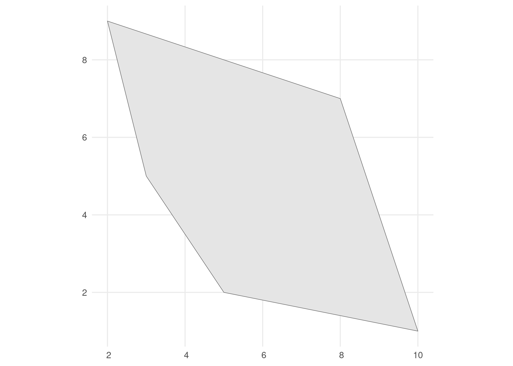
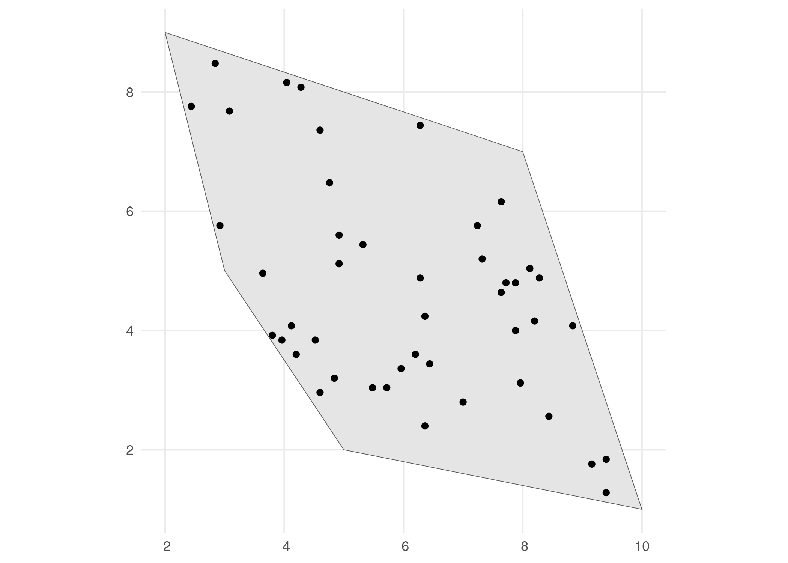
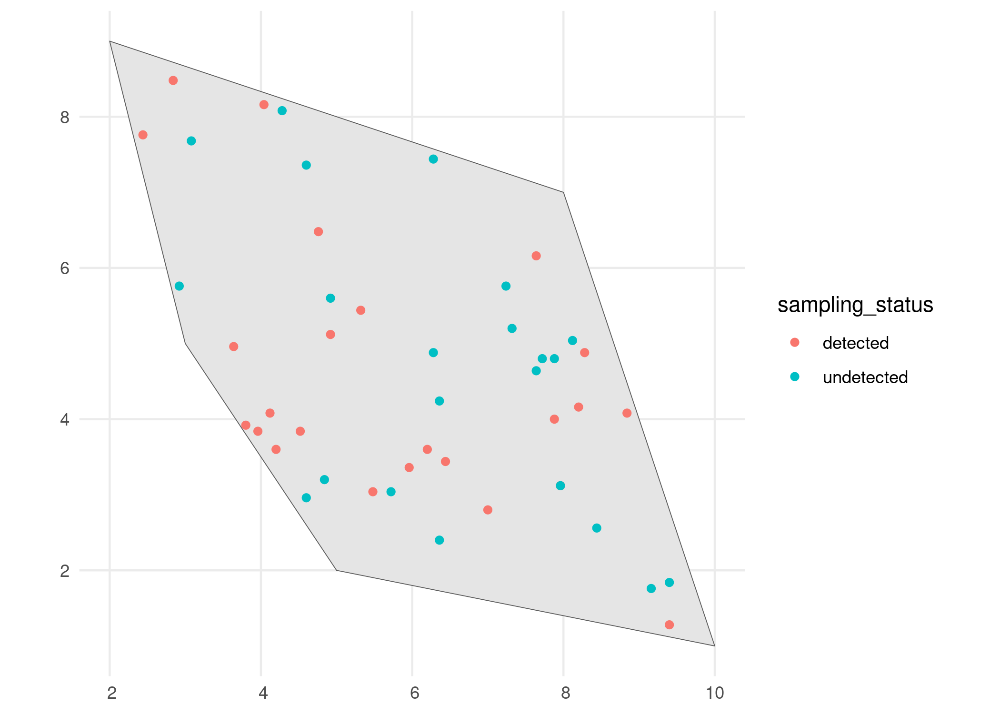
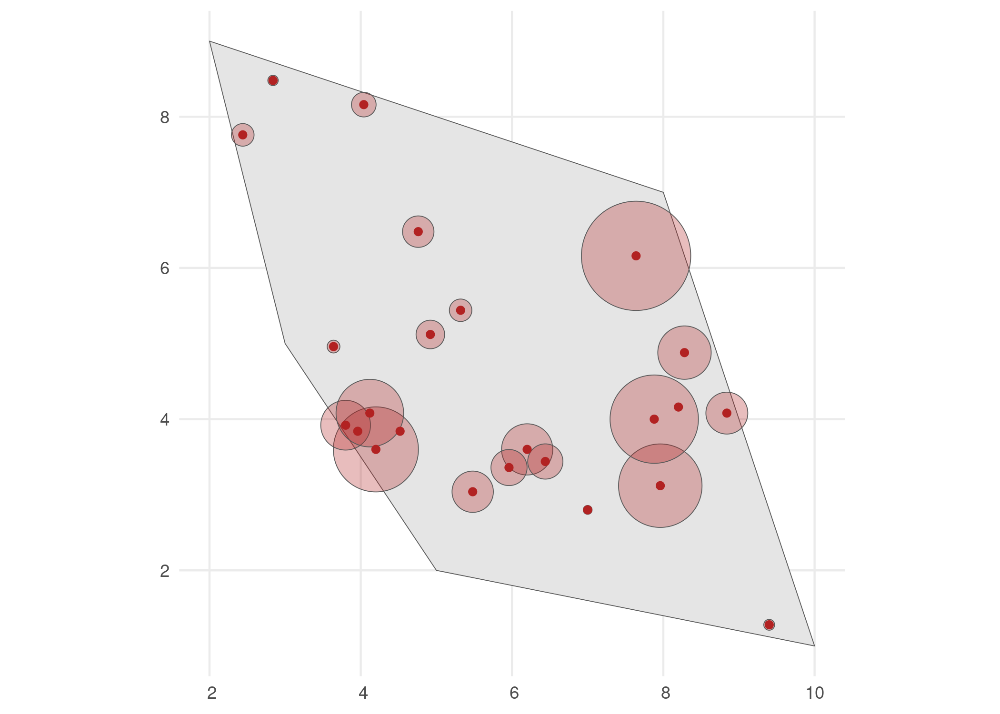
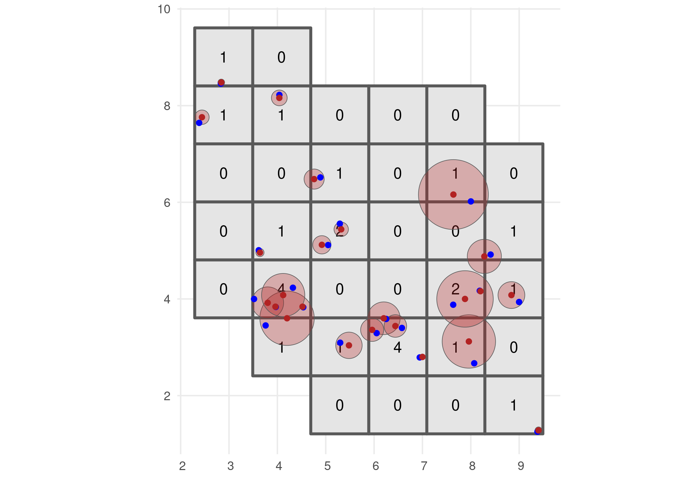
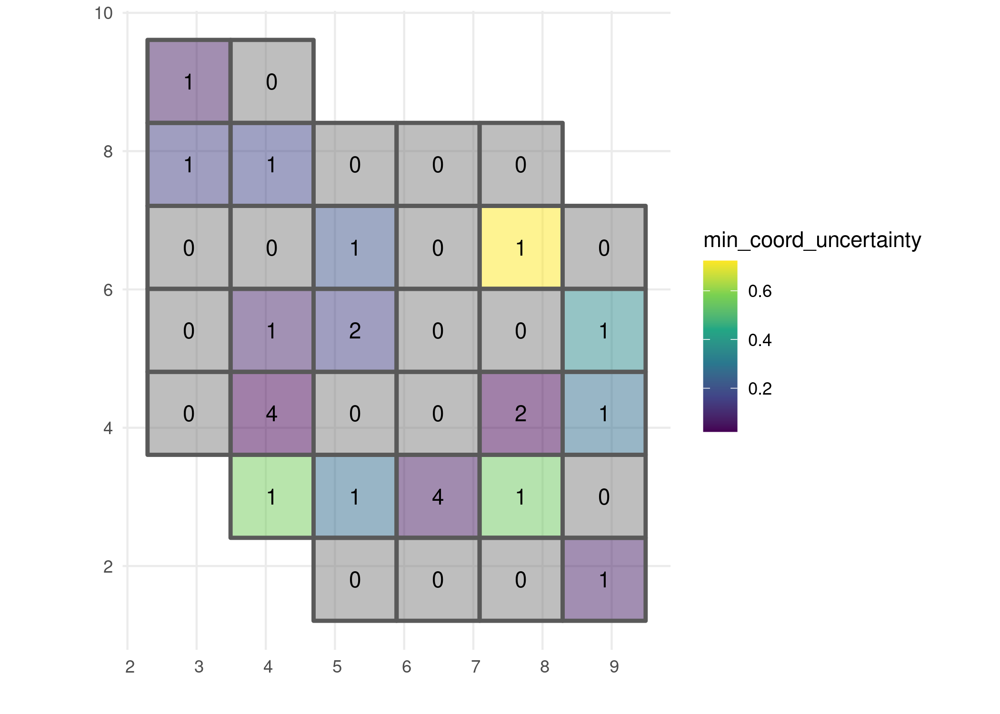

The goal of gcube is to provide a simulation framework for biodiversity data cubes using the R programming language. This can start from simulating multiple species distributed in a landscape over a temporal scope. In a second phase, the simulation of a variety of observation processes and effort can generate actual occurrence datasets. Based on their (simulated) spatial uncertainty, occurrences can then be designated to a grid to form a data cube.
Simulation studies offer numerous benefits due to their ability to mimic real-world scenarios in controlled and customizable environments. Ecosystems and biodiversity data are very complex and involve a multitude of interacting factors. Simulations allow researchers to model and understand the complexity of ecological systems by varying parameters such as spatial and/or temporal clustering, species prevalence, etc.
Installation
You can install the development version from GitHub with:
# install.packages("remotes")
remotes::install_github("b-cubed-eu/gcube")Example
This is a basic example which shows you the workflow for simulating a biodiversity data cube. This is divided in three steps or processes:
- Occurrence process
- Detection process
- Grid designation process
The functions are set up such that a single polygon as input is enough to go through this workflow using default arguments. The user can change these arguments to allow for more flexibility.
# Load packages
library(gcube)
library(sf) # working with spatial objects
library(dplyr) # data wrangling
library(ggplot2) # visualisation with ggplotWe create a random polygon as input.
# Create a polygon to simulate occurrences
polygon <- st_polygon(list(cbind(c(5,10,8,2,3,5), c(2,1,7,9,5,2))))
# Visualise
ggplot() +
geom_sf(data = polygon) +
theme_minimal()
Occurrence process
We generate occurrence points within the polygon using the simulate_occurrences() function. These are the “real” occurrences of the species, whether we have observed them or not. In the simulate_occurrences() function, the user can specify different levels of spatial clustering, and can define the trend change of the species over time.
# Simulate occurrences within polygon
occurrences_df <- simulate_occurrences(
plgn = polygon,
seed = 123)
#> [using unconditional Gaussian simulation]
# Visualise
ggplot() +
geom_sf(data = polygon) +
geom_sf(data = occurrences_df) +
theme_minimal()
Detection process
In this step we define the sampling process, based on the detection probability of the species and the sampling bias. This is done using the sample_observations() function. The default sampling bias is "no_bias", but bias can also be inserted using a polygon or a grid.
# Detect occurrences
detections_df_raw <- sample_observations(
occurrences = occurrences_df,
detection_probability = 0.5,
seed = 123)
# Visualise
ggplot() +
geom_sf(data = polygon) +
geom_sf(data = detections_df_raw,
aes(colour = sampling_status)) +
theme_minimal()
We select the detected occurrences and add an uncertainty to these observations. This can be done using the add_coordinate_uncertainty() function.
# Select detected occurrences only
detections_df <- detections_df_raw %>%
dplyr::filter(sampling_status == "detected")
# Add coordinate uncertainty
set.seed(123)
coord_uncertainty_vec <- rgamma(nrow(detections_df), shape = 2, rate = 6)
observations_df <- add_coordinate_uncertainty(
observations = detections_df,
coords_uncertainty_meters = coord_uncertainty_vec)
# Created and sf object with uncertainty circles to visualise
buffered_observations <- st_buffer(
observations_df,
observations_df$coordinateUncertaintyInMeters)
# Visualise
ggplot() +
geom_sf(data = polygon) +
geom_sf(data = buffered_observations,
fill = alpha("firebrick", 0.3)) +
geom_sf(data = observations_df, colour = "firebrick") +
theme_minimal()
Grid designation process
Finally, observations are designated to a grid to create an occurrence cube. We create a grid over the spatial extend using sf::st_make_grid().
# Define a grid over spatial extend
grid_df <- st_make_grid(
buffered_observations,
square = TRUE,
cellsize = c(1.2, 1.2)
) %>%
st_sf() %>%
mutate(intersect = as.vector(st_intersects(geometry, polygon,
sparse = F))) %>%
dplyr::filter(intersect == TRUE) %>%
dplyr::select(-"intersect")To create an occurrence cube, grid_designation() will randomly take a point within the uncertainty circle around the observations. These points can be extracted by setting the argument aggregate = FALSE.
# Create occurrence cube
occurrence_cube_df <- grid_designation(
observations = observations_df,
grid = grid_df,
seed = 123)
# Get sampled points within uncertainty circle
sampled_points <- grid_designation(
observations = observations_df,
grid = grid_df,
aggregate = FALSE,
seed = 123)
# Visualise grid designation
ggplot() +
geom_sf(data = occurrence_cube_df, linewidth = 1) +
geom_sf_text(data = occurrence_cube_df, aes(label = n)) +
geom_sf(data = buffered_observations,
fill = alpha("firebrick", 0.3)) +
geom_sf(data = sampled_points, colour = "blue") +
geom_sf(data = observations_df, colour = "firebrick") +
labs(x = "", y = "", fill = "n") +
theme_minimal()
The output gives the number of observations per grid cell and minimal coordinate uncertainty per grid cell.
# Visualise minimal coordinate uncertainty
ggplot() +
geom_sf(data = occurrence_cube_df, aes(fill = min_coord_uncertainty),
alpha = 0.5, linewidth = 1) +
geom_sf_text(data = occurrence_cube_df, aes(label = n)) +
scale_fill_continuous(type = "viridis") +
labs(x = "", y = "") +
theme_minimal()